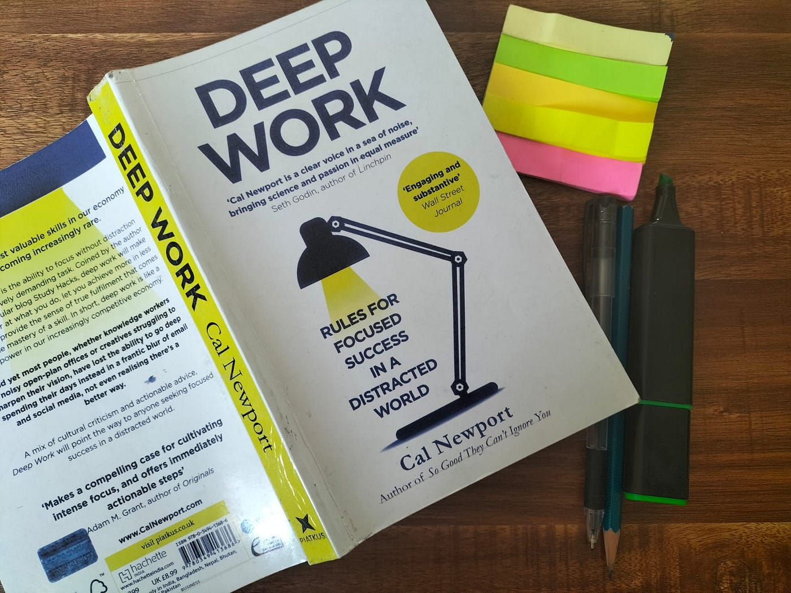

Deep Work by Cal Newport
Part 1: The Idea
deep work = rare , hard to replicate
shallow work = non demanding , easy replicable
deep life is not just economically lucarative but also life well lived
1. Deep Work is Valuable
Deep work reduces attention residue and leads to higher performance. streamlines attention and increase happiness ( neurological ). generates flow that satisfies our life ( flow - psychological ). mindset of craftmanship ( builder ). those who will thrive are - high skilled worker, superstars, owners.
four pillar of deep work : two core abilities of thriving — ability to quickly master hard things; ability to produce at an elite level in terms of both quality and speed. quality determines opportunity time and speed determines competition out.
how deep work enables mastery : deliberate practice. high quality work produced = time spent x intensity of focus.
problem - attention residue. soln - work on single task for long period without switching.
2. Deep Work is Rare
shallow work is easier - so mass prefer. the principle of least resistance - we naturally gravitate towards what easier at that moment. busyness as proxy for productivity. culture of connectivity.
3. Deep Work is Meaningful
if you read flow by Mihaly Csikszentmihalyi then you know why deep work is valuable. our brain construct our worldview based on what we pay attention to. deep work focus your attention on thing that matter creating richer mental world.
Part 2: The Rules (How to do Deep Work)
there are 4 ways you can incorporate deep work in your life: Monastic, Bimodal, Rhythmic, Journalistic. i prefer rythmic bcz this fits my lifestyle.
Rule#1 : Work Deeply
willpower is limited, you have to establish routine. where/when/how (no distraction, metric for success, phone or other devices -nt). support: material organized in advance and ready. coffee or tea to initiate.
4 discipline of execution (4dx): focus on wildly important - one or two, not catching rabbit. act on the lead measure - for deep work track hours. keep a compelling scorecard. create accountability - check what went wrong good/bad each week.
shutdown ritual - complete mental shutdown. turn off all related to work after particular time. plan schedule for next day then completely off. this is crucisl for sustaining deep work.
Rule#2 : Embrace Boredom
the ability to concentrate intensely is a skill that must be trained.
strategy 1 - schedule your internet use. resist and be bored at that interval.
strategy 2 - roosevelt dashes: identify high-priority deep work, estimate how long, set a hard deadline, work until completion.
strategy 3 - productive meditation: walking, jogging, showering, driving, dishes etc. choose one well defined professional problem, define variables, work through mentally, consolidate afterward. obstacles: looping — acknowledge and go deeper. distraction — acknowledge and comeback.
Rule#3: Quit Social Media
problem - any-benefit mindset. soln : craftsmanship approach to tool selection.
process: identify main professional and personal goals (2-3 each). identify 2-3 most important activities. assess each tool — positive impact? negative impact? keep if positive outweigh negative.
THE LAW OF VITAL FEW (80/20 rule): out of many supporting tools, only few actually make significant difference.
30 day social media ban challenge: ban for 30 days, don’t announce, don’t delete. after 30 days ask — would it be notably better if used? did people care? both no = quit permanently. both yes = resume.
Rule#4: Drain the Shallow
don’t spend more time on shallow work. time scarcity forces better decisions. schedule every minute of your day. time blocking method. quantify the depth of every activity. fixed schedule productivity — don’t work after end time. become hard to reach.